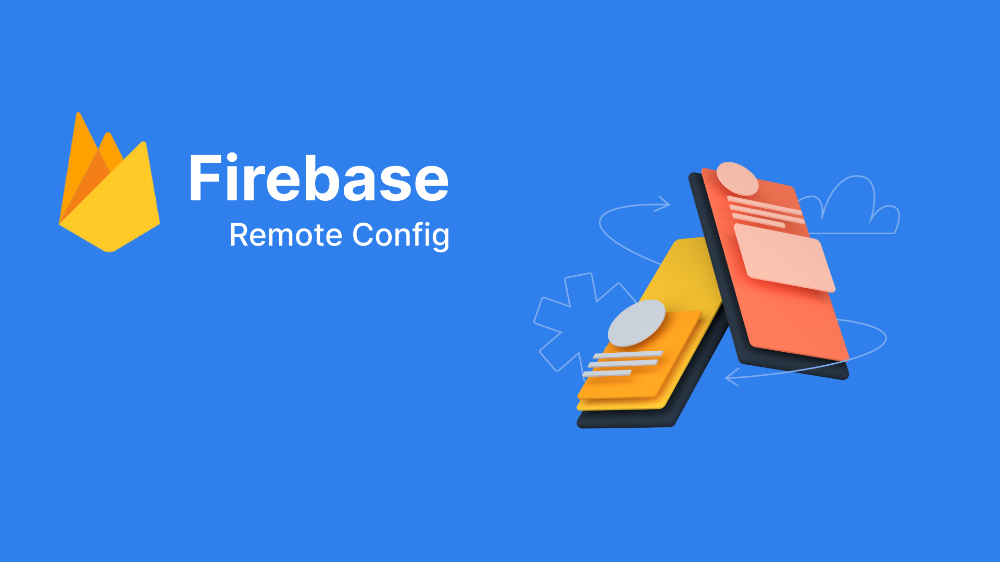

Firebase Remote Config
I. Overview
Firebase Remote Config is a Firebase service that helps you manage and update your app's configuration without the need to release a new version on the app store. It allows you to adjust configuration values from the Firebase Console and deliver them to users' apps flexibly.
Here are some key points about Firebase Remote Config:
Dynamic Configuration Updates:
- Allows you to adjust configuration values without the need to update the app on the app store.
- Updates can be triggered at any time, allowing you to make changes quickly without having to wait for the approval process.
User Classification:
- You can classify users into groups and apply different configuration values to each group. This helps in testing features and user experiences.
Trigger Conditions:
- Providing the ability to apply configuration values based on conditions such as app version, country, language, and other custom conditions. Performance and Stability.:
- Configuration data is stored synchronously, ensuring high performance and stability during updates.
Integrations:
- Firebase Remote Config can be integrated with other Firebase services, such as Analytics, to analyze the performance of configuration changes.
- There is an SDK for various platforms such as Android, iOS, and web, facilitating easy integration of the service into your application.
Security and Safety:
- Configuration data is transmitted over a secure connection using HTTPS, ensuring security.
Firebase Remote Config is commonly used to adjust app features, settings, and user experiences without having to release a new version. This is particularly useful when you want to test and optimize your app in real-time.
II. How does Firebase Remote Config work?
1. Fetch và Active
Firebase Remote Config operates based on a mechanism of fetching and updating configuration data from the Firebase server and synchronizing it with the user's mobile app through the provided SDK.

Fetch data from Firebase server:
- When you call the fetch function, the Firebase Remote Config SDK connects to the Firebase server to retrieve the latest configuration data. This data is typically returned in JSON format.
Cache
- After a successful fetch, the new configuration data is temporarily stored in the device's cache memory. This allows the app to immediately use the new configuration values without having to fetch them from the server every time they are needed.
- The activateFetched function transfers the data from the cache memory to the current configuration of the app.
In case you call the fetch function when the expiration time has not elapsed, Firebase Remote Config will check whether enough time has passed between fetches. If the time between fetches is not sufficient, it will return the data from the cache memory without making a call to the Firebase server to retrieve new data.
Use:
- After activation, the new configuration values are ready to be used in the source code of the application.
Automatic Data Update:
- If you have configured automatic data updates, the SDK can automatically perform the fetch and caching process based on a set time interval or a specific event. This helps maintain the application configuration information without manual intervention.
- The fetchAndActivate function combines both the fetch and activate steps automatically.
This process helps streamline the configuration update workflow of the application, reducing the time required to apply changes. Both the fetch and cache storage processes are performed to ensure performance and synchronization.
2. Real-time configuration
Firebase Remote Config provides the ability to update app configurations in real-time through several flexible features. When you configure Firebase Remote Config for real-time updates, there are some differences compared to the usual approach. Here are some distinctions when you use the real-time update feature:
Instant Updates:
- When the real-time update feature is activated, changes in the configuration can be applied immediately to the application without waiting for the next fetch.
- This allows the application to respond promptly to new configuration changes.
Automatic Polling:
- Firebase Remote Config will automatically perform fetches to check and retrieve new configuration data from the Firebase server without the need for the app to explicitly call the fetch command..
- This ensures that your application can update its configuration even when users do not perform any specific actions.
III. Demo with Flutter
Create a new Firebase Demo project:

At https://console.firebase.google.com/, log in to your account and create a new project.

Add iOS and Android apps accordingly, then download the configuration file and copy it into the project.
Add lib
- flutter pub add firebase_core
- flutter pub add firebase_remote_config
- flutter pub add firebase_analytics
Initialize at the main

Android:
Add: apply plugin: 'com.google.gms.google-services'

and: classpath 'com.google.gms:google-services:4.3.13'

Access the console and create configuration


Publish change, the data on Remote Config is now ready
1. fetch and active

Set up the remote and retrieve the results in the code, run debug, and check the data. We observe that remoteConfig.getAll() returns a Map containing keys and values:
- key_demo_remote_config: These are the keys added in the console
- value is of type RemoteConfigValue. To retrieve the data, it needs to be cast to the corresponding types such as string, int, bool, etc.

2. Real-time configuration
Utilize remoteConfig.onConfigUpdated.listen to listen for configuration change events. On the console, perform data updates and publish the changes. After publishing, we capture the changes in the event as follows: